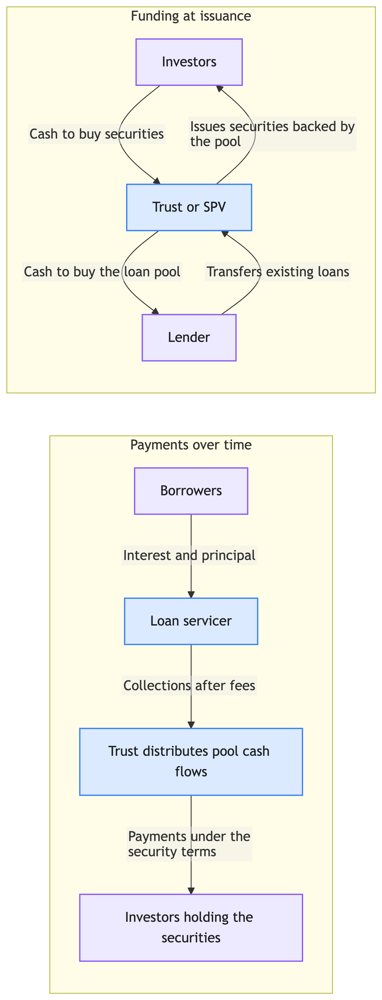

Lecture 1: Introduction
Learning Objectives
After reading this lecture you should be able to:
- Describe the fundamental features of bonds.
- Explain the major types of bond issuers and the sectors of the bond market.
- Interpret the importance of the term to maturity in bond valuation and risk.
- Differentiate between fixed‑rate, floating‑rate and inverse‑floating‑rate securities.
- Explain what embedded options are and how options affect a bond’s cash flows.
- Identify and describe the common types of embedded options (call, put, conversion, currency choice).
- Discuss convertible bonds and exchangeable bonds.
- Recognize the spectrum of risks faced by fixed‑income investors.
- Describe the role and functioning of the secondary bond market.
These objectives come directly from the first chapter of Fabozzi’s text and frame the topics covered in this lecture.
1 What is a bond?
A bond is a debt instrument requiring the issuer (the borrower) to repay the amount borrowed plus interest over a specified period of time. In the simplest “plain vanilla” bond the issuer promises a fixed series of cash flows: periodic coupon payments and the repayment of principal at maturity. Because the cash flow pattern is known up front (assuming the issuer does not default or redeem the bond early), an investor who holds the bond until the maturity date is assured of receiving a predetermined sequence of payments.
1.1 Bond cash‑flow structure
Two contractual elements determine a bond’s cash flow pattern:
- Principal (face value or par value) – the amount the issuer must repay at the maturity date. Synonyms include redemption value, maturity value and par value.
- Coupon rate and payments – the interest rate the issuer agrees to pay each year. The coupon rate multiplied by the principal gives the annual coupon payment. For example, a bond with a 6 % coupon rate and a face value of $1 000 pays $60 in interest each year, usually in two semi‑annual installments.
The maturity date is the date when the principal is repaid. Traditional fixed‑rate bonds promise equal coupon payments over the life of the bond. Zero‑coupon bonds make no periodic interest payments; instead they are sold at a discount and repay the principal at maturity.
Suppose a bond has a principal of $1 000 and a coupon rate of 5 %. The annual coupon payment is simply (0.05×1 000=50). If coupons are paid semi‑annually, the investor receives $25 every six months. This illustrates how the coupon rate and principal determine the bond’s cash flow pattern.
1.2 Term to maturity
The term to maturity is the number of years over which the issuer must meet its obligations. Bonds with maturity of 1–5 years are called short‑term, those with 5–12 years are intermediate‑term, and bonds with more than 12 years are long‑term. Maturity matters because:
- It determines the horizon over which the investor receives coupon payments and principal.
- The yield on a bond depends on its maturity; yields for different maturities form the yield curve.
- Price volatility increases with maturity: all else equal, long‑term bond prices fluctuate more when yields change.
1.3 Principal and coupon types
Most bonds have a fixed coupon rate; however the bond market also includes floating‑rate bonds in which the coupon resets periodically based on a reference rate plus a quoted margin. For example, a floating‑rate bond might pay 1‑month LIBOR plus 150 basis points (1.5 %). LIBOR is the London Interbank Offered Rate, an interbank lending rate reported for several currencies. If 1‑month LIBOR is 3.5 % and the quoted margin is 1.5 %, the coupon for that period resets at 5.0 %.
LIBOR is no longer the standard benchmark for newly issued floating‑rate instruments. After concerns about manipulation and the decline of unsecured interbank lending activity, regulators and market participants moved to alternative reference rates. U.S. dollar LIBOR has largely been replaced by SOFR (Secured Overnight Financing Rate), which is based on transactions in the U.S. Treasury repo market. In Canada, Canadian dollar LIBOR was not the main local benchmark; the key transition has been from CDOR to CORRA (Canadian Overnight Repo Rate Average). In other major markets, common replacements include SONIA in the United Kingdom, €STR in the euro area, SARON in Switzerland and TONA in Japan.
A repurchase agreement, or repo, is a short‑term secured loan. One party sells a security, often a U.S. Treasury, for cash and agrees to buy it back later at a slightly higher price. Economically, the security seller is borrowing cash and pledging the security as collateral; the difference between the sale price and repurchase price implies the repo rate. Because SOFR is based on overnight Treasury repo transactions, it reflects the cost of borrowing cash secured by Treasury collateral rather than unsecured bank borrowing.

In a reverse repo, the same transaction is viewed from the cash lender’s side: the lender provides cash, receives collateral and later returns the collateral when repaid.
Inverse floating-rate bonds (inverse floaters) have coupons that move opposite to a reference rate. A typical structure is:
\[ \text{Coupon}_t = a - b \cdot r_t \]
where (r_t) is a benchmark rate (e.g., SOFR). As rates rise, the coupon declines; as rates fall, the coupon increases. This makes inverse floaters highly sensitive to interest rate movements and generally suitable for investors expecting declining rates.
Deferred-coupon bonds are designed to reduce or eliminate near-term cash payments by shifting coupon obligations into the future. These structures were widely used during the leveraged buyout wave of the 1980s to accommodate issuers with limited short-term cash flow.
Common forms include:
Deferred-interest bonds
Pay no coupons for an initial period, after which regular interest payments begin.Step-up bonds
Feature coupons that increase over time (e.g., 3% → 5% → 8%), effectively back-loading cash payments.Payment-in-kind (PIK) bonds
Do not pay cash interest; instead, accrued interest is added to the principal, increasing the outstanding balance over time.
These instruments are forms of cash flow engineering: inverse floaters embed a directional exposure to interest rates, while deferred-coupon structures primarily address issuer liquidity constraints, typically at the cost of higher credit risk.
Inflation-linked bonds, also known as “linkers,” are bonds whose principal and/or coupon payments adjust with changes in an official inflation index. The most prominent examples are Treasury Inflation-Protected Securities (TIPS) in the United States, which are indexed to the Consumer Price Index (CPI).
- With TIPS, the principal amount is adjusted by the change in CPI; coupon payments are calculated on the inflation-adjusted principal, so both the interest payments and maturity value rise with inflation. This provides investors with protection against the eroding effect of inflation on fixed income.
- In Canada, the equivalent instrument is called a Real Return Bond (RRB), which adjusts both principal and coupon payments based on changes in the Canadian Consumer Price Index (CPI).
- At maturity, investors in TIPS receive the greater of the original principal or the inflation-adjusted principal, guaranteeing repayment of their initial investment even in a period of deflation.
Inflation-linked bonds are an important segment of the global bond market, providing a direct way to hedge inflation risk.
1.4 Amortization feature
In a non‑amortizing bond the entire principal is repaid at maturity. Amortizing securities, by contrast, repay principal over time according to an amortization schedule. Mortgage‑backed and asset‑backed securities are examples. For amortizing bonds investors often compute the weighted average life to measure the effective maturity.
Suppose an investor purchases a 5-year amortizing bond with a principal of $1,000 and equal annual payments of principal and interest. Unlike a non-amortizing bond—which pays all principal at maturity—this bond returns part of the principal each year along with interest.
| Year | Principal Repaid | Remaining Principal |
|---|---|---|
| 1 | $200 | $800 |
| 2 | $200 | $600 |
| 3 | $200 | $400 |
| 4 | $200 | $200 |
| 5 | $200 | $0 |
Weighted Average Life (WAL): Weighted average life measures the average time until each principal dollar is repaid, weighted by the amount of principal paid at each period. It is useful for comparing the effective maturity of amortizing securities versus a standard bullet (non-amortizing) bond.
To calculate WAL:
\[ \text{WAL} = \frac{\sum_{t=1}^{N} P_t \times t}{\text{Total Principal}} \]
where \(P_t\) is the principal repaid at time \(t\).
For this bond:
\[ \text{WAL} = \frac{200 \times 1 + 200 \times 2 + 200 \times 3 + 200 \times 4 + 200 \times 5}{1000} = \frac{200 (1+2+3+4+5)}{1000} = \frac{200 \times 15}{1000} = \frac{3000}{1000} = 3\ \text{years} \]
Thus, although the final maturity is 5 years, the weighted average life is only 3 years, since principal is returned gradually rather than all at once.
1.5 Embedded options
Many bonds include options that allow either the issuer or the bondholder to alter the cash flow pattern. Embedded options complicate valuation because the timing and amount of cash flows depend on future interest rates. Common options include:
- Call provision – The issuer may redeem the bond before maturity at a specified price. Issuers call bonds when market rates fall, disadvantaging investors by limiting price appreciation and forcing reinvestment at lower rates.
- Put provision – The bondholder may sell the bond back to the issuer at par on specified dates. This protects investors when rates rise.
- Conversion option – Convertible bonds allow the bondholder to exchange the bond for a specified number of shares of common stock.
- Currency‑choice option – Payments may be made in different currencies, giving one party the ability to benefit from exchange‑rate movements.
Some securities contain multiple embedded options (e.g., a callable, putable, convertible bond). These features must be valued using option‑pricing techniques, which are covered in later lectures.
A convertible bond allows the bondholder to exchange the bond for a predetermined number of the issuer’s common shares. An exchangeable bond allows exchange for shares of a company other than the issuer. These bonds provide upside exposure to stock price appreciation while retaining bond‑like features.
1.6 Identifying bond issues
With hundreds of thousands of bonds outstanding, securities need unique identifiers. In the U.S. the CUSIP (Committee on Uniform Security Identification Procedures) assigns a nine‑character code identifying the issuer and issue. Debt issues covered include Treasuries, municipals, corporates, mortgage‑backed, asset‑backed and commercial paper. Market participants often identify a bond by its issuer, coupon and maturity (e.g., Alcoa 5.95s 2/1/2037).
2 Innovation and sectors of the bond market
2.1 Financial innovation
Beginning in the early 1980s a wide range of new bond structures was introduced. The residential mortgage market saw the development of mortgage pass‑through securities, where pools of individual mortgages are securitized and cash flows are passed through to investors. From these basic instruments issuers created derivative securities such as collateralized mortgage obligations (CMOs) and stripped mortgage‑backed securities to meet the investment needs of a broader range of institutional investors.
2.2 Sectors of the U.S. bond market
The U.S. bond market – the world’s largest – is divided into six primary sectors:
| Sector | Description |
|---|---|
| U.S. Treasury | Bonds, notes and bills issued by the U.S. government. Treasuries serve as benchmarks for valuation and interest rates globally. |
| Agency | Debenture securities issued by federally related institutions and government‑sponsored enterprises. These are unsecured and constitute the smallest sector. |
| Municipal | Bonds issued by states, cities and local authorities. Divided into tax‑exempt and taxable subsectors. Structures include tax‑backed bonds and revenue bonds. |
| Corporate | Debt issued by U.S. corporations and non‑U.S. corporations in the U.S. market. Instruments include bonds, medium‑term notes, structured notes and commercial paper. Corporates are categorized as investment‑grade or non‑investment‑grade based on credit ratings. |
| Asset‑backed securities (ABS) | Securities backed by pools of loans or receivables such as auto loans, credit‑card receivables and music royalties. Issuers include captive finance subsidiaries of corporations; unusual ABS include “Bowie bonds” backed by music royalties. |
| Mortgage | Securities backed by mortgage loans on residential or commercial properties. The mortgage sector is subdivided into residential and commercial mortgages, with further distinctions between agency and non‑agency mortgage‑backed securities and between loans to prime and subprime borrowers. |
Asset‑backed and mortgage‑backed markets
The asset‑backed securities sector pools loans or receivables and uses the asset pool as collateral. Captive finance companies (subsidiaries of manufacturers that finance customer purchases) are common issuers; examples include Ford Motor Credit and Caterpillar Financial. Even performing artists have issued ABS backed by future royalties.
The residential mortgage sector includes loans for one‑ to four‑family homes. Loans are classified by borrower credit quality (prime or subprime) and by whether they conform to underwriting standards of a federal agency or government‑sponsored enterprise. Agency mortgage‑backed securities (MBS) are backed by Ginnie Mae, Fannie Mae or Freddie Mac; non‑agency MBS are issued by private entities and further subdivided into prime and subprime sectors.
The commercial mortgage sector backs securities with loans on income‑producing properties such as office buildings, shopping malls, hotels and healthcare facilities.
Pooled investment vehicles
Retail and institutional investors can gain exposure to the bond market through pooled investment vehicles such as investment company shares, exchange‑traded funds, hedge funds and real estate investment trusts. These vehicles offer diversification, liquidity and professional management, making them an attractive alternative to purchasing individual bonds.
3 Risks faced by bond investors
Fixed‑income investing involves numerous risks. Fabozzi lists nine key risks. Understanding these risks is essential for effective portfolio construction and risk control.
3.1 Interest‑rate risk
Bond prices move inversely with changes in market interest rates: when rates rise, bond prices fall, and vice versa. If an investor must sell before maturity, rising rates may lead to capital losses. The price sensitivity to rate changes depends on factors such as maturity, coupon and embedded options.
3.2 Reinvestment risk
Yield calculations assume that coupon payments are reinvested at the same rate. Reinvestment risk is the risk that the actual reinvestment rate will be lower than expected. Reinvestment risk is greater for high‑coupon bonds and longer holding periods. Interest‑rate risk and reinvestment risk offset each other; strategies such as immunization exploit this offset.
3.3 Call risk
A call provision allows the issuer to retire (call) the bond before maturity. Investors face three disadvantages:
- Uncertainty in cash flow timing because the call date is unknown.
- Increased reinvestment risk: bonds are usually called when rates decline, forcing investors to reinvest at lower yields.
- Limited price appreciation: the bond’s price may not rise above the call price, reducing capital gains potential.
3.4 Credit risk
Credit risk refers to the possibility that the issuer fails to meet its contractual obligations. It has three components:
- Default risk – the risk of missed interest or principal payments.
- Credit spread risk – the risk that the yield spread between a corporate bond and a comparable Treasury widens, causing the bond’s price to decline.
- Downgrade risk – the risk that a rating agency lowers the bond’s credit rating, which typically leads to a price decline.
Credit ratings assigned by agencies (e.g., Moody’s, S&P, Fitch) help investors gauge default risk. Investors are also exposed to counterparty risk, the risk that the counterparty in a transaction fails to meet its obligations. For example, leveraged purchases of bonds or trades in over‑the‑counter derivatives expose investors to counterparty default risk.
3.5 Inflation risk
The real value of future cash flows depends on inflation. Inflation risk arises when the purchasing power of a bond’s cash flows declines due to rising prices. Floating‑rate bonds tied to inflation (also called linkers) reduce inflation risk.
3.6 Exchange‑rate risk
For bonds denominated in a foreign currency, the investor’s return depends on exchange rates. If the foreign currency depreciates relative to the investor’s home currency, the value of the cash flows declines.
Suppose a Japanese investor borrows in yen at a very low interest rate and invests in a higher-yielding U.S. bond. This is a classic carry trade:- Borrow in Japan at ~0% - Convert JPY → USD - Invest in a U.S. bond yielding ~5% If exchange rates remain stable, the investor earns the interest rate differential (≈ 5%).However, the return depends critically on the exchange rate:- If the U.S. dollar depreciates against the yen, the value of the bond’s cash flows (in yen terms) declines - Even if the bond performs well in USD terms, the investor can incur a loss after converting back to yen For example:- Initial: 1 USD = 140 JPY - Final: 1 USD = 120 JPY That ~14% currency loss can more than offset the bond’s yield advantage.Key point: for foreign-currency bonds, total return = bond return + exchange rate movement, and the currency component can dominate.
3.7 Liquidity risk
Liquidity risk reflects the ease with which a bond can be sold at a reasonable price. A wider bid–ask spread signals higher liquidity risk. While retail investors planning to hold to maturity may ignore liquidity risk, institutional investors must mark portfolios to market and therefore require market prices based on sufficient trading volume.
3.8 Volatility risk
For bonds with embedded options, price depends on both interest rates and the expected volatility of rates. Greater expected volatility increases the value of the option. For callable bonds and mortgage‑backed securities the price tends to decrease when volatility rises because the option given to the issuer becomes more valuable. Volatility risk is often quantified using vega from option pricing theory.
3.9 Risk risk
Fabozzi introduces risk risk, defined as the risk of not understanding the risks inherent in a security. Investors mitigate risk risk by staying informed about analytical techniques and avoiding securities they do not understand. Although complex securities may offer higher returns, thorough analysis is essential.
4 Secondary market for bonds
After a bond is issued in the primary market, it can be bought and sold in the secondary market. Secondary trading provides liquidity and allows investors to adjust portfolios in response to changing market conditions. Liquidity varies across sectors: Treasury securities trade heavily, while certain municipals or high‑yield corporates may trade infrequently. The presence of active secondary markets is crucial for price discovery and portfolio valuation.
Additional worked examples
Consider a zero‑coupon bond with a face value of $1 000 and 3 years to maturity. The yield (discount rate) is 4 %. Because there are no coupon payments, the price is simply the present value of the principal:
\[ P = \frac{F}{(1+r)^T} = \frac{1000}{(1.04)^3} \approx \$889.00 . \]
This example illustrates the use of the bond pricing formula for zero‑coupon securities.
A floating‑rate bond pays 1‑month LIBOR + 150 basis points. On the reset date LIBOR is 3.75 %. The coupon for the next period resets to:
\[ \text{Coupon} = 3.75\% + 1.50\% = 5.25\% . \]
If the bond’s face value is $1 000 and coupons are paid quarterly, the next coupon payment will be \[ \frac{5.25\%}{4} \times 1000 = 13.125 . \]
This demonstrates how the reference rate and quoted margin determine floating‑rate coupons.
Suppose a callable bond can be redeemed at $1 050 after two years. The bond has a coupon rate of 6 % and face value $1 000. If market interest rates fall to 4 %, the price of a comparable noncallable bond may rise to $1 100. However, the issuer is likely to call the bond at $1 050 to refinance at the lower rate. Investors therefore cannot benefit fully from price appreciation and face reinvestment at lower yields.
Consider a corporate bond yielding 5 % when a comparable Treasury yields 3 %. The credit spread is 2 % (200 basis points). If economic conditions deteriorate, the spread may widen to 3 %, causing the corporate bond’s price to fall. Investors exposed to credit spread risk must monitor factors affecting the issuer’s credit quality.
Key Points
A bond is a debt contract in which the issuer promises a schedule of cash flows—typically periodic coupon payments and repayment of principal at maturity—unless default or embedded options alter those flows.
Principal (face or par value) and the coupon rate determine the promised cash flows; traditional fixed‑rate bonds pay equal coupons, while zero‑coupon bonds pay interest implicitly through a discount to par.
Term to maturity shapes interest‑rate risk and yield quotation; yields by maturity trace the yield curve, and longer maturities generally imply greater price volatility when yields change.
Markets also include floating‑rate bonds (coupon resets off a reference rate plus a quoted margin), inverse floating‑rate bonds, deferred‑coupon structures, and inflation‑linked bonds such as U.S. TIPS and Canadian RRBs.
New floating‑rate issues increasingly reference SOFR, CORRA, SONIA, €STR, and similar benchmarks rather than LIBOR.
Non‑amortizing bonds repay principal at maturity; amortizing securities repay principal over a schedule; weighted average life (WAL) summarizes how quickly principal is returned on amortizing structures.
Embedded options—call, put, conversion, and currency choice—can change cash‑flow timing or upside and require option‑aware valuation.
Convertible bonds exchange into the issuer’s equity; exchangeable bonds exchange into shares of another company.
Major risks include interest‑rate risk, reinvestment risk, call risk, credit risk (default, credit spread, downgrade), counterparty risk, inflation risk, exchange‑rate risk, liquidity risk, volatility risk for option‑rich bonds, and risk risk—investing in securities one does not fully understand.
Bonds are sold first in the primary market and then trade in the secondary market, where liquidity and price discovery vary widely by sector and issue.